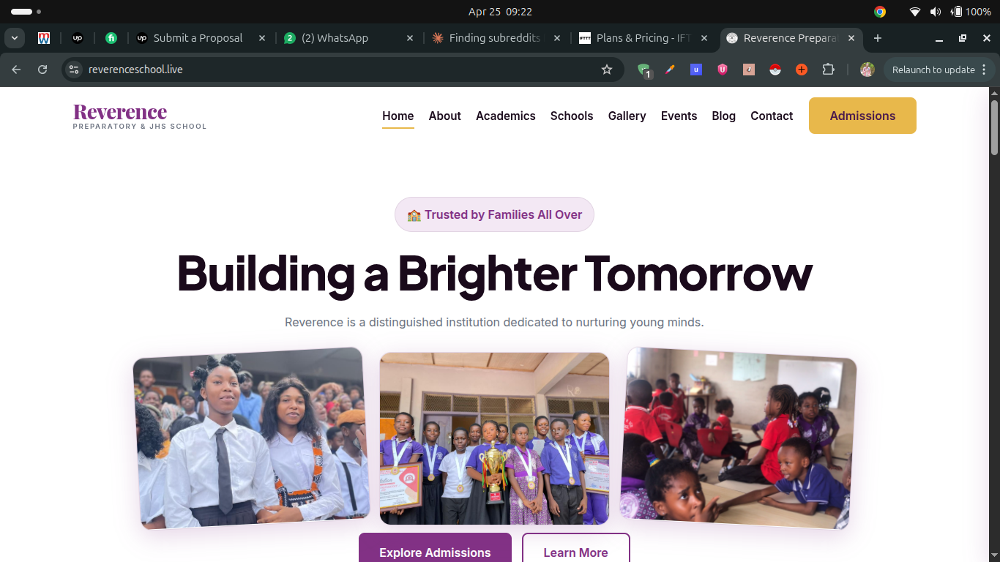
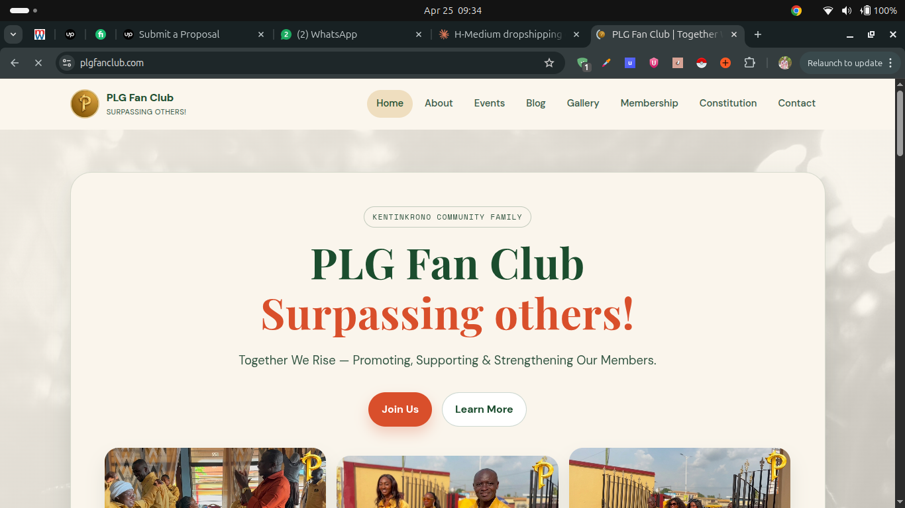
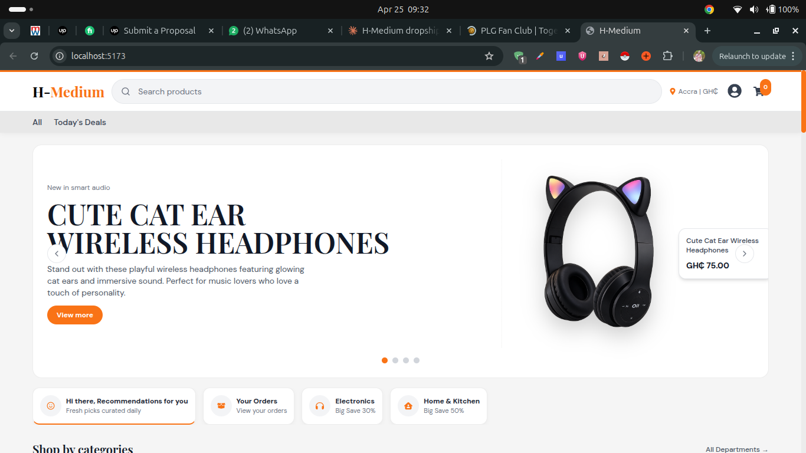
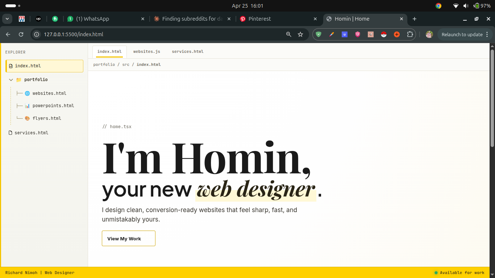

School Website
Project built for the Reverence Preparatory and JHS school.
Had fun working on this and partly got help from codex and
hosted on Netlify. Even added a small CMS for the admin.
HTML
CSS
JS
Visit Site

Fan Club Website
Built this website for the PLG Fan Club. Involved creating a
platform with a small stack and hosted on Netlify, with a
small CMS addition as well to update content on the site with
Dcap.
HTML
CSS
JS
Visit Site
🚧 In Progress

H - Medium
Working on the design for an ecommerce website, looks mid
right now but I never let that stop me. I will refine it till
it becomes absolute art and then I will build it out and host
it. Can't wait to share the final product!
🚧 In Progress

My Portfolio
Why would you add your own portolio site here? Weird, I know,
but I will always be working on improving it so, it deserves a
spot here as other projects do too.